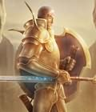

Forums galactiques > Assemblée Galactique : diplomatie officielle > Passage obligé : Présentations
Pages : 1 2 ... 22 23 24 ... 40 41
| Yumiko Respect diplomatique : 88  29/01 ETU 11:39 | Score : 0 Détails Merci de me prevenir cher prince. Je ne connais encore personne alors c'est un peu compliqué.
| ||
| Prince Kheldar Respect diplomatique : 99  29/01 ETU 11:53 | Score : 1 Détails Je me présente donc à vous, douce et tendre Yumi :
Je suis le Prince Kheldar de Drasnie de la Maison Darhan, je suis le frère de Sandor, le Mochissime escroc reconnu de tous ! Je suis le plus beau de la galaxie, reconnu de tous ! Et j’aimerais faire plus ample connaissance avec une si jolie fleur… EDIT : Par x-com ^^ | ||
| Yumiko Respect diplomatique : 88 29/01 ETU 12:07 | Score : 2 Détails Yumi était impressionnée par le prince ! Elle était de plus en plus mal à l'aise ! Elle balbutiait en répondant à Kheldar.
Je suis f ... flattée ! Je serai h ... heureuse de faire connaissance avec vous ... heu ... toi ! Mais je ne pense pas que ce sois la salle adéquate pour ça !! | ||
| Meyen Respect diplomatique : 515  29/01 ETU 14:17  | Score : 3 Détails Prince Kheldar je vois que vous n'êtes pas "courtois" qu'avec moi....
| ||
| Prince Kheldar Respect diplomatique : 99 29/01 ETU 14:34 | Score : 0 Détails Certes, mais cela est bien normal… Quand je me vois accusé de harcèlement par les fiancés de ces dames, je préfère me tourner vers d’autres cœurs…
Eh oui, Namy, la courtoisie se partage ^^ | ||
| Meyen Respect diplomatique : 515 29/01 ETU 14:38 | Score : 3 Détails Je n'ai pas de fiancé pourtant.. Qui vous a blâmé ?
| ||
| Prince Kheldar Respect diplomatique : 99 29/01 ETU 14:59 | Score : 3 Détails Vous-même… Vous n’avez pas continué notre échange et je vous voyais souvent assise le regard vide à rougir en pensant à je ne sais qui…
Et puis, un jour où je marchais sous le ciel étoilé, je vous ai entendu : vous étiez collée de façon fort indécente, contre le Camarade Nicanor, à lui chuchoter des secrets… Pour éviter que l’armée rouge ne me tombe dessus, je vous ai laissée à lui… | ||
| Meyen Respect diplomatique : 515 29/01 ETU 15:11 | Score : 3 Détails Mais qu'est-ce que vous avez tous à me parler de lui ... ? Pourtant ces histoires la sont très secrète, d'où tirez-vous vos informations ???
| ||
| Nicanor de Rokha Respect diplomatique : 2498  29/01 ETU 15:16 | Score : 4 Détails NOTE A L'ATTENTION DU PRINCE KHELDAR
La teneur des échanges entre le camarade Nicanor de Rokha et la camarade Mademoiselle Namy est classée SECRET DEFENSE et ne serait être évoquée ainsi sur un réseau publique à l'Assemblée Galactique. Afin de faire taire toute rumeur, le camarade Nicanor de Rokha n'a jamais entretenu autre chose que des rapports cordiaux de nature strictement protocolaire avec la camarade Namy.ca Lewinsky L'Armée Rouge est actuellement mobilisée contre la menace extrêmiste Bolchevik et ne serait être déviée de sa tache. De plus, l'U.R.S.S. souhaite entretenir des rapports amicaux avec le camarade Kheldar et en aucun cas il ne serait être question de régler une affaire d'honneur et d'amour meurtri au petit jour, demain matin, sur le coteau. Amenez un témoin, le camarade Nicolaï vous laisse le choix des armes ^^ Le Bureau des Affaires Etrangères de l'Etat. | ||
| Prince Kheldar Respect diplomatique : 99 29/01 ETU 16:08 | Score : 7 Détails Mais… J’ai bel et bien vu les deux protagonistes se faire des gestes outranciers dans un coin sombre de la Taverne… Ou c’est ce pédé de Redd Bonnett qui a corsé ma dose d’astropastis…
Bon, c’est arrangé : si l’Etat de l’U.R.S.S. dit que ces échanges n’ont rien de la romance que la rumeur semble annoncer : Namy, nous allons reprendre notre échange ^^ Il y eut le loup et le poulpe ; il y a Ellys et Andeman, Lizaka et Julie Modesty, Demettra et tout le hellfire ; et il y a, peut-être Namy et Nicanor… Que d’amour… | ||
| andeman Respect diplomatique : 1393  29/01 ETU 16:23 | Score : 1 Détails damn....
meme les jeunes sont au courant... | ||
| zelda Respect diplomatique : 82 01/02 ETU 17:46 | Score : 6 Détails Une jeune femme pénétra timidement dans la salle. De tenue légère, euh!, très légère, elle s´avance vers l´estrade, monte les marches, manque de s´étaler. On vit sa très courte jupe se relever et laisser ses fesses apparaîtrent. Elle n´en rougit même pas !
Avec un grand sourire, elle s´adresse à la salle : Hi everybody, Je me présente, je suis Zelda jeune sœur de Marine représentante du peuple de Xeos (plus pour très longtemps, hihi). Ma formation c´est faite dans le commerce et la communication (pas comme l´autre pieuse). Enfin voilà, je vais être amenée à prendre la succession de Marine et notre peuple connaîtra enfin la paix, du moins c´est ce que nous souhaitons ( ;-)). Tous, vous pourrez me contacter à toutes heures, pour commercer ou plus si affinités… Merci de m´avoir écouté. Zelda. La jeune femme ressortit tranquillement en sifflotant…quand Xeos apprendra, aie aie ! | ||
| wizstreg Respect diplomatique : 6 01/02 ETU 18:03 | Score : 6 Détails
Je suis Wizstreg, gardien du Tombeau Demain, je ne serai plus là. Alors pour que vos nuits ne soient plus si longues et que vous ayez une belle histoire à raconter à vos enfants, je vais vous raconter celle de l'UNIQUE telle que nous l'avons découverte sur d'antiques reliques. ============================ Il y a extrêmement longtemps, alors que les Humains n'avaient pas encore découvert le voyage extra galactique, un homme dirigeait son peuple d'une main de fer. Il avait commis de nombreux crimes pour arriver à la position qu'il occupait; Meurtres, mensonges, trahison étaient son pain quotidien. Lorsqu'il parvint à la fonction suprême, il continua à faire souffrir ses semblables,. Par la terreur qu'il inspirait, il parvint à régner sans partage pendant de longues années. Vint un jour pourtant, ou son peuple comprit qu'un seul homme ne pouvait le réduire en esclavage. Cela commença par de petites réunions dans les rues des villages éloignés de la capitale. En ces temps là, l'holovision n'avait pas encore été inventée. Puis ces "rebelles" gagnèrent à leurs idées quelques hommes des villes. Bien entendu, le "tyran" fit des exemples. Les décapitations et mutilations allaient bon train en ces temps là. Mais plus les opposants souffraient et plus la c olère grondait. Arriva un jour où les opposants furent plus nombreux que les partisans. Et quand on règne par la terreur, on ne peut s'attendre à une fidélité sans bornes. Quand ce jour arriva, le palais fût pris d'assaut. Pas longtemps, les gardes se rendant rapidement. Le tyran fût amené devant un tribunal de fortune. La décision fût rapidement prise: la mort. Pas une mort rapide. Il ne la méritait pas. Une mort lente. Extrêmement lente. Il fût enfermé vivant dans le tombeau qu'il avait préparé à son intention. Un système de ravitaillement avait été rajouté par les insurgés. Le tombeau fût refermé, le caveau scellé. Le tyran avait alors deux possibilités: se laisser mourir ou survivre dans un espace obscur de 60 centimètres sur un mètre 70. Il n'était pas homme à choisir la première solution. Pendant de longs mois, il se ravitailla tandis que son corps privé d'exercice perdait toute force. Bientôt, il ne resta plus de lui qu'un esprit et un estomac. Les mois se transformèrent en années et le tyran survivait toujours. Mais son isolement et la singulière situation dans laquelle il se trouvait lui permirent d'acquérir de nouvelles aptitudes. Son esprit pouvait s'échapper de son corps et agir sur son environnement. Après de nombreuses années, il pût même se passer de la nourriture qui lui était fournie. Son peuple crût qu'il avait enfin abandonné ce plan de l'existence. Mais il n'en était rien. l'Endormi était bien toujours présent. Son cerveau fonctionnait désormais à pleins régimes. Ses rêves de vengeance n'en étaient que plus puissants. Les siècles passèrent. Puis les millénaires. Les cris de l'esprit de l'UNIQUE devinrent de plus en plus forts et insoutenables. La planète fût désertée... Jusqu'à ce que le Caveau, le Tombeau et la planète qui les accueillaient soient redécouverts par ceux qu'on appelle aujourd'hui les Gardiens (l'histoire en est contée ici ) Pourquoi adorer un tel être, me direz vous? Pourquoi le protéger? Je vous répondrai que nous adorons sa puissance, son intransigeance, sa force de caractère qui font qu'un jour il dominera à nouveau l'ensemble de l'Humanité. Pourquoi le nourrir de sang et de larmes? Parce qu'il nous l'a ordonné; Car la souffrance assoie sa puissance. Sa noirceur nous effraie t'elle? Parfois... Parfois.... ============================ Toi qui m'écoutes, tu sais à présent pourquoi nous recherchons ton sang et tes larmes et pourquoi l'enfant à qui tu raconteras cette belle histoire devra un jour, à son tour, verser son sang et ses larmes... Toi qui m'écoutes, dors tranquillement maintenant car tu sais désormais ce qu'est ton futur. http://www.freewebs.com/triumvirat/index.htm | ||
| Shélindrea Respect diplomatique : 69 04/02 ETU 03:36 | Score : 14 Détails Une jeune femme, habillée d'une robe stylisée et finement brodée, apparut sur les écrans télévisés et holographiques des différents moniteurs présents de l'Assemblèe Galactique.
Son visage, fin et au teint velouté, démontrait un certain sérieux dans son intervention en direct dans les murs de ce bâtiment officiel qui représentait la splendeur de la Galaxie des Exilés. Durant quelsques secondes, elle regarda avec flegme droit devant elle, son regard froid accentué par le maquillage qui dessinait le contour de ses yeux noirs. Puis elle esquissa un léger sourire et entama sa présentation d'une voix douce, chaleureuse et accueillante. "Je vous salue Assemblèe Galactique. Je me nomme Shélindrea Eliand. Nouvelle dirigeante du peuple anthinéen et, par la même, présidente directrice de la corporation D.E.S.I.R., Directive Economique Spatiale d'Investissements et Royalties. J'ai pris la décision, en tant que légitime représentante de ma nation, que notre planète devait enfin quitter son isolement. En effet, nous ne pouvions ouvrir de relations commerciales extérieures, à notre sphère économique, et, ainsi, rencontrer nos futurs clients, dans le but de la création d'un partenariat profitable, sans prendre cette résolution. En tant que présidente directrice, je suis ouverte à toutes propositions d'ordre diplomatique, financier et... Plus, si affinité... Je vous remercie commandantes, commandants, mesdemoiselles, mesdames et messieurs de m'avoir accordé ce court moment afin que je puisse me présenter à vous. Bien à vous et à bientôt." L'hologramme de la jeune femme disparut des écrans, laissant à nouveau place, aux sujets politiques habituels de l'Assemblée Galactique. | ||
| Larry Winthorpe Respect diplomatique : 2277  04/02 ETU 10:43 | Score : 15 Détails <Larry ! Cette femme me plagie ! Regarde ça : D.E.S.I.R., quelle honte, quel manque de savoir-vivre !>
"Rhhhaa, tais-toi, S.A.R.A., tu prends tout mal ! Nous n'avons pas le monopole des sigles, après tout !" <Elle a pô tort, la patronne, ça ressemble un peu trop à nous à mon goût, pour sûr ! Et pis j'aime pas ses manières de mijaurée, moi, à faire le belle devant tous ces commandants, qui z'en ont déjà la bave aux lèvres !> "Bon, G.E.R.M.A.I.N.E., tu ne t'y mets pas toi aussi, sinon on ne s'en sortira pas ! Laissez-moi parler !" "Bonjour, à vous, Dame Shélindréa ! Heureux de vous accueillir au nom de la Galaxie des Exilés, et je vous souhaite une bonne et heureuse vie parmi nous. Si vous avez des problèmes quelconques, n'hésitez pas à venir en parler dans cette Assemblée, ou à envoyer un X-Com aux gens qu'il faut. Bonne journée, commandante." <Copieuse...> <Mijaurée...> "Bon, c'est fini toutes les deux ? Jalouses, va !" | ||
| cassenoisettes Respect diplomatique : 74  08/02 ETU 16:03 | Score : 4 Détails Nouveaux Commandants de la galaxie, Bonjour,
Le haut conseil des Cassenoisettes à validé 1 budget pour promouvoir l'endurance et la force dans les combats spatiaux entre jeunes commmandants. Ainsi, rendez vous immédiatement dans les tavernes à la mode, vous y glannerez toutes les infos pour vous en foutre plein les fouilles. Cependant, après qqs litres d'astro-chouchen, on ne sait plus vraiment où l'on en est, alors dans ce cas, contactez nous directement pour avoir 1 brochure. ******************Ceci était 1 publicité de l'agence de promotion des ptits nouveaux.************************* | ||
| nemusar Respect diplomatique : 303  08/02 ETU 16:34 | Score : 0 Détails le commandant cassenoisettes est en pourparler avec le conglomerat BYND, nous attendons de vos nouvelles sur l'affaire 12
la suite par x-com | ||
| Requiem Respect diplomatique : 1538  08/02 ETU 17:18 | Score : 0 Détails Requiem arriva en trainant les pieds, l'air completement déchiré... Il devait revenir du coffee probablement...
Ouais Pingouin! T'as tout dis! | ||
| Agan Respect diplomatique : 67  09/02 ETU 18:08 | Score : 10 Détails Enregistrement d’une caméra comportant quelques anomalies. situation : la nuit d’hier.
La nuit a l’assemblée, on se demande bien encore quel imbécile y resterais vingt quatre heure sur vingt quatre, surtout que ça doit être passionnant au bout d’un moment. Alors bon, la elle semble un peu déserte. Pour le moment les lumières de l’assemblée sont un peu éteintes, quelques lumières par ci, par la attestant de la présence de certains commandants insomniaques ou alors d’un oubli quelconque. Bref, il règne une semi obscurité propice au activité douteuse, et autres choses lugubres. D’ailleurs ce soir la, l’ambiance semble assez lugubre, on peut presque imaginer des bonnes histoires de fantômes capable de faire frémir n’importe quel humain normalement constitué et surtout sain d’esprit (ce qui n’est pas évident pour la suite comme nous allons le voir). On peut presque sentir une ambiance malsaine, voir et percevoir les ombres intangibles bouger. Et soudain, on aperçoit une horrible ombre simiesque se former sur un mur et on entend un cri sinistre Ooooooooookkkkkkk On entend des chuchotements sombre et furtif puis d’un coup, comme un coup de tonnerre totalement inattendu et frappant a coté du paratonnerre contrairement a toutes lois de la physique -Putain vous allez arrêter de faire les marioles, bordel ! une voix autoritaire, excédée, et semblant aussi a la fois inquiète. On entend ensuite plus faiblement venant d’une autre voix plus fluette et plus ténue -hé ? hé ! Fait moi le lapin difforme, c’est celui que je préfère ! * SBAFF on entend comme si quelque chose de contondant et de douloureux s’était abattu sur les auteurs de cette plaisanterie -C’est pas possible les gars, je vous laisse deux minutes et voilà, faut s’en tenir aux plans. Vous imaginez si le boss nous tombe dessus ? On est bon pour … Oh, vous êtes bon pour quoi ? Une voix cette fois ci intéressante, elle semble tout a fait nonchalante, exprimant une surprise feinte, mais aussi résonnants avec des accents froids et terriblement inquiétants Et puis je croyais vous avoir dit de … la voix s’arrête instantanément et reprend d’un air songeur Vous croyez que ce singe la pourra jouer de l’orgue ? avec quatre bras, cela doit donner une puissance inégalé pour les meilleurs morceau, oh oui peut être bien. -Boss, c’est pas ma faute, ces deux la sont des incapables, on est désolé de vous avoir ennuyé, ce n’était pas de notre intention, vous comprenez Monsieur Ag..., boss la voix autoritaire qui réprimandait les plaisantins est maintenant un peu moins autoritaire et on entend même plus les plaisantins. Je comprend, je comprend, oui ; cette nuit cela passe, après tout cela n’irait pas si je commençais a tuer mes équipes hein ? l’homme éclate de rire puis le rire s’éloigne, ce genre de rire que l’on voit presque en italique. Les gens qui rient ou parlent en italiques sont souvent dangereux. -------------------------- NDN : * : l'on comprend ici pour les moins érudit d'entre nous que l'on parle d'ombre chinoise, si vous ne comprenez toujours pas, essayez de faire un lapin en ombre chinoise; vous verrez bien | ||
| Zeran Kohl Respect diplomatique : 9  09/02 ETU 20:39 | Score : 9 Détails Une salle de présentation....Zeran resta perplexe.Pourquoi mettre une salle ou les gens vont certainnement mentir?
Une telle façon de penser le dépasser.Mais autant se soumettre à la coutume locale. "Bonjours Commandant,je suis Zeran Kohl,mage Junerith numéro 7 catégorie Espada de la cellule diplomatique galactique." Zeran se massa le coup.Pourquoi l'avait on mutter dans ce service?Il était incapable de se présenter sociablement dans une asemblée. Il finit maladroitement. "Heu..bonne journée." |
Pages : 1 2 ... 22 23 24 ... 40 41
Forums galactiques > Assemblée Galactique : diplomatie officielle > Passage obligé : Présentations